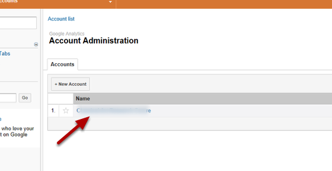

You can set up filters on Google Analytics so that each Research Group can view statistics for their group but not for the rest of the website.
Go to the Research Group page and make a note of the last part of the web address (in the above example /crg).You will need to know this when you set up your filter.
Log into Google Analytics and click on Admin at the top right hand side of the page.
Click on your site name until you reach the following screen (you might need to click on the name more than once)
Click on + New Profile
Click on Filters
Click on + New Filter
To create a read only account for the Research Group click on Users
Click on + New User
When the Owner of the email account logs into Google Analytics they will now be able to see Statistics for pages in their research group but not the rest of the site.